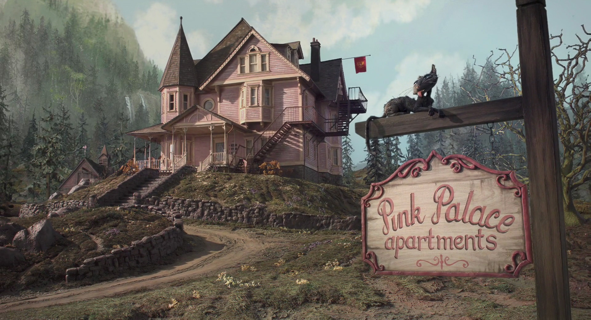
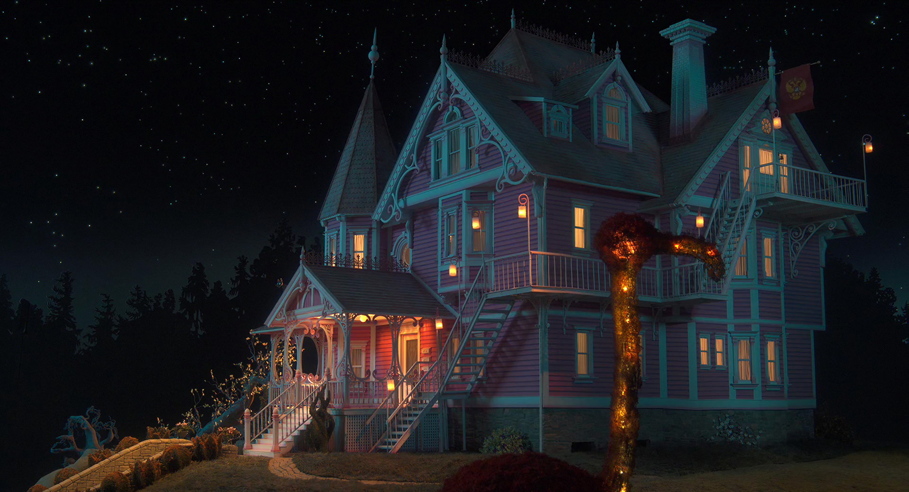

Pink Palace Apartments

|
Los apartamentos Pink Palace están ubicados en Ashland, Oregon, es una vieja mansión que fue renovada para ser un complejo de apartamentos, lo que alguna vez fue una casa para una familia se dividió en varios apartamentos. Según Charlie Jones la mansión tiene unos 150 años. Wyborn, nieto de la Señora Lovat (Dueña de Pink Palace), dice que es bastante extraño que se permitiera a la familia Jones vivir en la mansión, ya que la señora Lovat no acepta niños. |
 |
|  |
El Palacio Rosa tiene un ambiente misterioso y algo lúgubre, está en una zona rodeada de montañas y bosques, alejada de la ciudad. A este panorama se suman estrambóticos personajes que acompañan las aventuras de Coraline. Sin embargo el Palacio Rosa también llega a ser un escenario maravilloso donde todos los personajes son parte de un ambiente colorido que dan lugar a escenas fantásticas. |